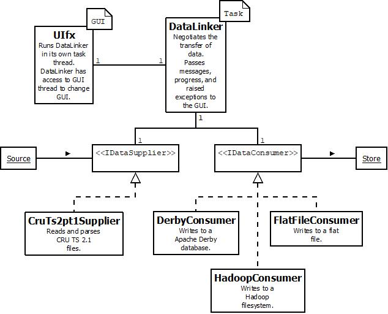
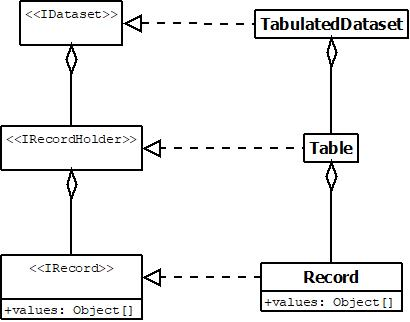
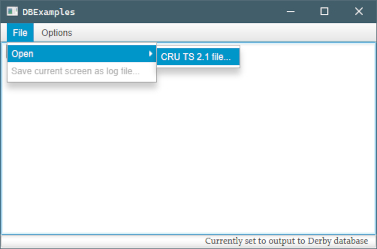
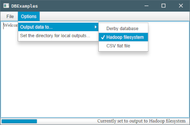
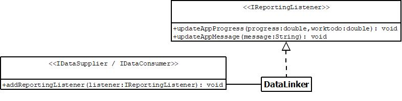
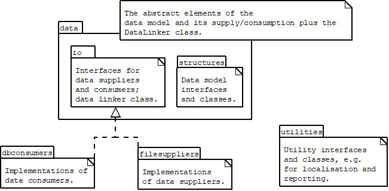

Notes on Code and UML
Structure
The main class that starts all others is io.github.ajevans.dbcode.dbexamples.DBExample. This class starts the GUI UIfx class.
The core of the application is an framework of abstracted data suppliers and consumers. These are paired together by a data linker which bridges with each of the pair and negotiates data transfer between them. In line with the strategy-pattern, the abstracted supplier / consumer interfaces are developed into a variety of different implementations loaded by the GUI at runtime and responsible for different inputs and outputs.
The GUI undergoes a discovery process to load available suppliers and consumers, keeping the GUI process-agnostic. The GUI runs a data linker in a task thread, passing in the relevant supplier and consumer selected by the user. The data linker then negotiates the transfer of data between the supplier and consumer, and passes back to the GUI thread any progress reports, messages, or exceptions, all of which are displayed to the user appropriately.

In this case, we implement a CruTs2pt1Supplier to read and parse CRU TS 2.1 files, a DerbyConsumer, to write data to an Apache Derby database (details), and a FlatFileConsumer to write flat files. The latter is available to the user as a convenient way to get transformed CRU TS 2.1 files, but is also used by DerbyConsumer in bulk loading data. Given the popularity of distributed solutions, a HadoopConsumer was also added.
NB: The data linker can be accessed directly in a non-threaded manner unlinked from the GUI for unit tests. Suppliers and consumers are also designed to allow piped data processing although this isn’t implemented here.
Data model
Underlying the data supplier and consumer relationship is an abstracted data storage structure which flexibily allows for a wide variety of implementing data types.

In this case, we implement a tabulated dataset suitable for database writing. The code and documentation utilises the terms source, holder and store for various elements indicating input, in-memory storage, and output respectively. For example, we might have “record holders” or “database sources”.
GUI
As mentioned, the GUI loads suppliers and consumers it discovers, maintaining the abstraction seen at the supplier/consumer class level. Suppliers are loaded as file opening options, while the destination consumer can be changed as an option.
 
The user can choose the directory to write to, but otherwise it defaults to their home directory. In each case, files are written to a created subdirectory; defaults for these can be changed in associated properties files (below).
Exceptions are presented to the user using alert popups, while processing messages are written to the GUI as text. These can be saved by the user as a text file for auditing. Progress is displayed with a progress bar at the bottom of the GUI.
Ancillary code
Localisation
The software is localised via a series of properties files found in the distribution /META-INF/ directory. These are:
application.properties: default directories for the application, test data, the ISO 639-1:2002 Alpha-2 language prefix for localisation (for English, this readslocale=en)en.properties: this is discovered using the localisation prefix (hereen). It contains all text interactions with the users in the appropriate language.en-datasuppliers.properties: this contains the full class name of each supplier and the localised GUI text to display for it.en-dataconsumers.properties: this contains the full class name of each consumer and the localised GUI text to display for it.
Also in this directory is the gui.css for styling the GUI.
Properties are gained throughout the application from a singleton PropertiesSingleton which is loaded by the GUI, but topped up with defaults where needed by each class that must reliably be able to communicate with the user. Defaults are in English but are only used where the appropriate language file, including the en-language file, is missing.
Sanitisation
Although the database system is local, as are the files, and the data public and therefore low-risk, the code nevertheless sanitises database inputs, including system variables and file paths. Database inputs are sanitised both for security and to create valid, e.g., table names. Other files are sanitised for operating system compliant names. All data is held in appropriate data types to ensure validity and sanitisation. For more on the latter, see Data and metadata. Authentication hasn’t been implemented on the database or in the software to make running the application as simple as possible, but would obviously be accounted for in a production-level implementation.
Reporting
The loose coupling between suppliers, consumers, and their use, is maintained through an abstracted observer-based reporting model which allows messages to be passed to the data linker.

The data linker then reports to the GUI via a set of methods that mirror IReportingListener which it inherits from its parent Task class. Data suppliers and consumers can’t call these inherited methods directly in the data linker as they reside in action on the GUI Thread. Task inheritors have a somewhat split nature: GUI-communicating Task methods residing on the GUI thread to update it, while other methods run on background threads to do processing. DataLinker therefore negotiates between the two parallel set of Task and IReportingListener messaging methods to pass messages from suppliers and consumers to the GUI.
Exceptions are GUI-friendly and thrown to calling code so they can be ultimately dealt with by the data linker (which passes them to the GUI where they display as user-friendly alerts).
Push mode
The system has two modes of data transfer. In the “pull” mode, the consumer pulls the whole dataset in one go from the supplier. This is quick, but can be memory intensive, especially for Derby. In the “push” mode, consumers register with the supplier for piecemeal updates as the file is read. This reduces the memory overhead, but is much slower, as consumers can’t use bulk loading techniques. By default, the system looks at the file sizes being loaded and estimates maximum memory use for comparison with available memory. If it looks like memory will be a problem, it moves to push mode.
If the application is too slow in push mode, you can force extra memory use by running it from a command line, thus:
java -jar -Xmx4g dbexamples-1.0-SNAPSHOT-jar-with-dependencies.jar
where the “4g” is the amount of memory you’d like to allocate to the process in gigabytes.
However, the system can also be forced into different modes, thus:
java -jar -Dmode=0 dbexamples-1.0-SNAPSHOT-jar-with-dependencies.jar
with the mode set to 0 for the slow, memory light, push mode; 1 for the fast, memory heavy, pull mode, and 2 for the default memory checking mode. In way of comparison, the sample file available (see introduction), which contains ~8M records, took around 30 mins to load but only ~100MB of memory under push conditions, but around 1 min to load and ~1500MB of memory under “pull” conditions.
Debugging
All exceptions are directed to the user with appropriate messages where not otherwise handled invisibly. However, in the unlikely event the suggestions don’t deal with an issue (for example, it is possible a user has permission issues outside of the software and can’t recognise them) the system can be put into “debug” mode, which will give more complex exception information a user can relay to support. Debug mode can be initialised by running the application from the command line using:
java -jar -Ddebug=true dbexamples-1.0-SNAPSHOT-jar-with-dependencies.jar
Outputs can be saved as a text file for emailing to support on most operating systems using:
java -jar -Ddebug=true dbexamples-1.0-SNAPSHOT-jar-with-dependencies.jar 1> output.txt 2>&1
Code style
Not knowing the environment the code is entering, Java was chosen as platform-agnostic and easy to distribute, while allowing reasonable GUI development. For a less formal project achieving the same ends with less development time, I’d probably have picked Python running in Jupyter, but Java brings a formalism and long-hand clarity which seems appropriate.
In terms of style, I’ve valued clarity over efficiency where efficiency is ok; for example, declaring variables to hold intermediate steps in processing, rather than chaining maths together. I have also gone for slightly larger classes than I normally would, to try to keep encapsulation broad and the class purpose clear rather the proliferating classes. Hopefully these together will help with understanding the application’s broad structure, even if it makes for somewhat verbose code. The overall package structure is:

A qualification of the software using an ISO standard process might be appropriate for a production-level version of the software, but for the moment qualification is limited to the unit tests supplied. These cover edge case tests for core utility methods; functional tests for all significant units of work; and uncleaned data edge case tests. For details of how to build the software, which will run the tests, see the introduction page. Generally, I tend to use Travis for testing, but it seemed helpful to keep things as simple as possible.
Potential refactoring
A few design decisions made early on might be refactored out, depending on the direction the software when in:
- The decision to allow piped processing and therefore the separation of supplier/consumer initialisation from data writing could be removed to simplify setup.
- The decision to have two processing routes, one for very large files where running out of memory might be a risk and another, quicker, pathway for small files makes data loading methods more complicated.
- The fact that so many of the utility methods for the consumers are nearly identical may suggest the need for a Consumer superclass.
- Internal record count estimations are actually entirely accurate now, and used as such, so the various method descriptions treating them as estimations should probably be updated.